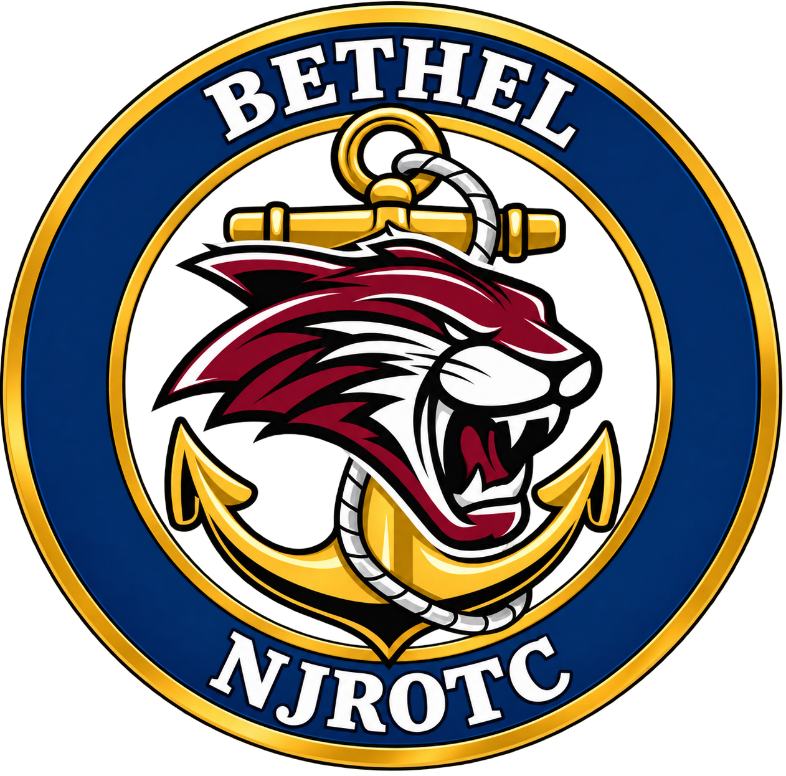

Bethel, Connecticut
Bethel High School NJROTC
Developing informed citizens, confident leaders, and service-minded teammates.
Unit statusOperational
Mission control
Find your next action
Fast access for cadets, families, and future members—organized around what you need to do.
Choose your route